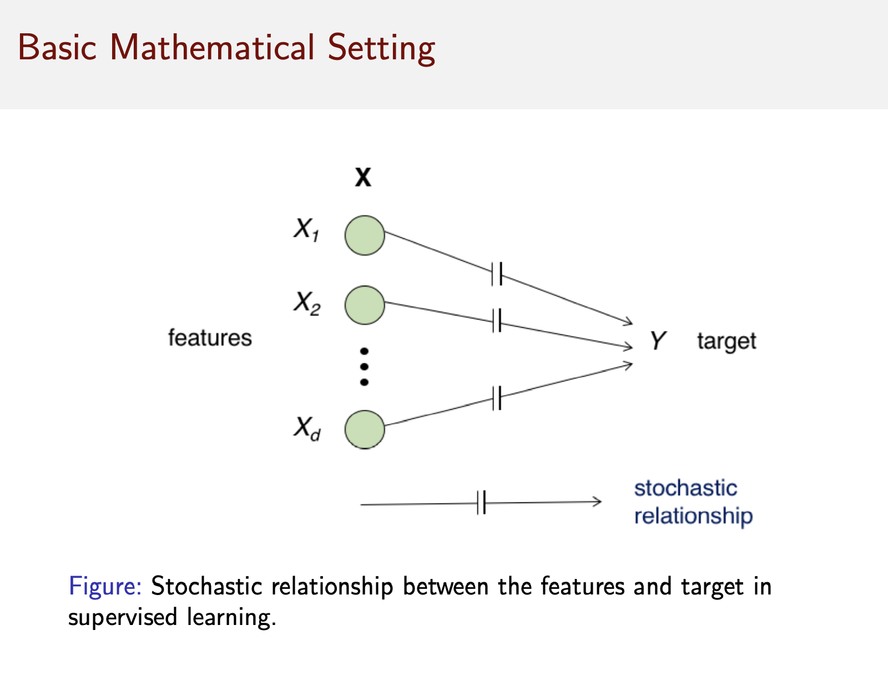
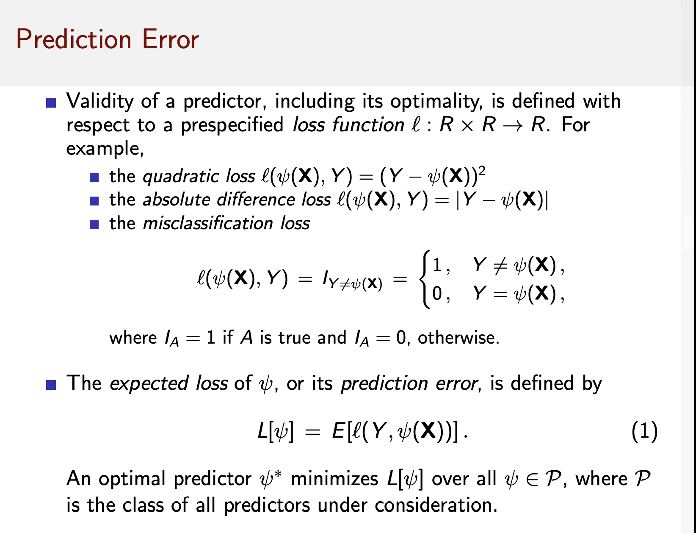

2 Chapter 01
2.1 Lecture
2.2 Pattern Recognition
- A pattern is the opposite of randomness.
- On the other hand, there is “randomness” between two events if they are independent.
For example, musical preference is independent of the occurrence of heart disease.
2.3 Machine Learning
Pattern Recognition and Machine Learning have substantial overlap with each other.
- Statistical pattern recognition
- Synthetic pattern recognition
- on the other hand, it is not statistically reasoning.
2.4 Basic Mathematical Setting
- A vector of measurements
- \(X\in R^d\)
- known as a feature vector
- a target \(Y\in R\) to be predicted
- Feature vector
- \(X\)
- Target vector
- \(Y\)
- The relationship between \(X\) and \(Y\) (Figure 2.1)
- rarely determinsitic
- There is no function \(f\) such that \(Y=f(X)\)
- but express as a joint probability distribution \(P_{X,Y}\)
- Source of uncertainty
- Latent factors
- \(Y\) depends on factors that are not available.
- Measurement noise
- The values of the predictor \(X\) itself
- Latent factors

2.5 Prediction
- A predictor
- \(\psi: R^d \to R\)
- \(\psi(X) \to Y\)
- Predictor (\(\psi\)) uses information about the joint feature-label distribution \(P_{X,Y}\)
- Direct knowledge about \(P_{X,Y}\)
- Distribution information
- Indirect knowlege about \(P_{X,Y}\)
- I.I.D. sample \(S_n =\{(X_1,Y_1),...,(X_n, Y_n)\}\)
- training dat
- I.I.D. sample \(S_n =\{(X_1,Y_1),...,(X_n, Y_n)\}\)
- Direct knowledge about \(P_{X,Y}\)
The pure data-driven method will ultimately fail.
- Probabilistic method
- Classical
- Bayesian method
Why is not everyone using Bayesian?
Bayesian method is complicated, especially the Bayesian inference.
- Optimal precictor
- \(\psi^{*}(X)\) with complete knowledge of \(F_{X,Y}\)
- Obstacles
- Knowlege of \(P_{X,Y}\) is unavailable
- Data-driven prediction rule must rely solely on \(S_{n}\)
- Certain data-driven predictors can approach the optimal predictor as \(n\to \infty\)
- However, the convergence rate mush be arbitrarily slow in the worst case.
- No-free-lunch theorem
- for finite \(n\), which is the practical case, having knowledge about \(F_{X,Y}\) is necessary to guarantee good performance.
2.6 Prediction error
